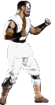
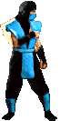
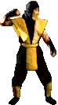

The First
Mortal Kombat is the "first" game in the Mortal Kombat fighting game series by Midway. It was released in arcades in 1992. It centers on the first Mortal Kombat tournament (Shang Tsung, Goro, and Raiden know it is actually the 10th tournament) and the ultimate defeat of the evil Shang Tsung by the monk Liu Kang.
Content:
- Gameplay
- Storyline
- Characters
- Johnny Cage
- Kano
- Sub-Zero
- Sonya Blade
- Raiden
- Liu Kang
- Scorpion
- Secret fight
Gameplay
Mortal Kombat is a fighting game in which players battle opponents in one-on-one matches. The player that depletes the opponent's health bar first wins the round and the first player to win two rounds wins the match. Players select one of seven characters. Whereas other fighting games had characters with considerable differences in speed, height, attacks, strength, jumping heights and distances, the playable characters in Mortal Kombat are virtually identical to one another with only minimal differences in their moves' range and speed. The game also distinguished itself from other fighting games of the time with its unique control scheme. The controls consist of five buttons arranged in an "X" pattern: four buttons for high and low punches and kicks with a block button at the center, as well as an eight-way joystick. Attacks can vary depending on the player's distance from the opponent. All player characters have a shared set of attacks performed by holding the joystick in various directions, such a leg sweep and the uppercut, which knocks enemies high into the air and causes a large amount of damage.
Mortal Kombat also featured unique ways in which special moves were performed. It was the first game to introduce special moves performed exclusively using the joystick. Most special moves were performed by tapping the joystick, sometimes ending with a button press.
Another of the game's innovations was the Fatality, a special finishing move executed against a beaten opponent to kill them in a gruesome fashion. For example, one character (Sub-Zero) would grasp a defeated opponent by the head, then rip off their head and spine while the body crumpled to the ground in a pool of blood. Fatalities could only be executed after you had defeated your opponent in kombat, and essentially served as a memorable and gruesome sort of victory dance.
Mortal Kombat also introduced the concept of juggling, an idea so popular it has spread to many games and even other genres. Juggling takes advantage of the fact when a character is knocked into the air, that player is unable to control his or her character until he or she lands and gets up again. The idea behind juggling is to knock the enemy into the air and then follow up with other combat moves to keep them there. Theoretically, one could juggle one's opponent to death without ever taking damage, though this was difficult to accomplish in practice.
Finally, Mortal Kombat also changed the way special moves were performed. Street Fighter (and many other fighting games) performed most special moves in fractions of circles (usually full, half or one-quarter) on the joystick followed by a button press (such as a quarter-circle forward, plus punch). Mortal Kombat was the first to introduce moves that did not require a button press (such as tap back, tap back, then forward), and only a few of the special moves required circular joystick movement.
Storyline
500 years ago, the annual Shaolin Tournament, long the most prestigious fighting tournament in the world, was interrupted by the appearance of an old sorcerer and a strange four-armed creature, who entered the tournament and defeated the Great Kung Lao. This Shokan warrior was the half-human, half-dragon fighter named Goro, who became the ultimate fighting champion for the next five hundred years. This was all part of Shang Tsung's plan to tip the balance into chaos and help Outworld conquer the Earth Realm.
Liu Kang would go to the tournament with the intent to restore balance. A martial artist/movie star Johnny Cage also entered the tournament and befriended Liu when a fight broke out between himself and Kano. Lin Kuei warrior Sub-Zero was invited to join the tournament by Shang Tsung himself, two years earlier after his ordeal with Shinnok's Amulet. (According to his MK Ending, his reason for joining the tournament was to assassinate Shang Tsung, by the request of a wealthy enemy of Tsung's. This, however, was never mentioned again). The undead Shirai Ryu ninja Scorpion entered to tournament intending to kill Sub-Zero, believing Sub-Zero to be responsible for killing him (in Mythologies, it was also stated that Scorpion thought that Sub-Zero had murdered his family and clan as well). Raiden, the God of Thunder, was also asked personally by Shang Tsung himself, and Raiden himself boasted that "all those who would oppose Raiden would be crushed." He took the form of a human in order to participate in the tournament.
Kano, the Black Dragon's most diabolical thug, was being chased by a U.S. Special Forces Unit, led by Lt. Sonya Blade, when he managed to get onto the boat leading to the tournament; his goal in the tournament was to loot Shang Tsung's Palace (where the walls are rumored to be made of gold). Once Sonya and her men arrived, Shang Tsung had his personal army ambush them. The Special Forces Unit got caught in the surprise attack, so Sonya had no choice but to take part in the tournament in order to save her team. Thus the tournament was set.
With Outworld already having won 9 tournaments in a row, our heroes would have to avoid handing Earth Realm the 10th loss, or all of humanity would crumble into the darkness of the Outworld (the "10 tournaments in a row" detail was added in Mortal Kombat Trilogy, and had previously been a key plot point in the film adaptation of the original Mortal Kombat).
Characters
Mortal Kombat included seven playable characters, all of which would eventually become trademark characters and appear in sequels. The game was developed with digitized sprites based on actors. The protagonist of the game is the Shaolin martial artist Liu Kang, played by Ho Sung Pak, who enters the tournament to defeat sorcerer Shang Tsung, the main antagonist and final boss (also played by Sung Pak).
Elizabeth Malecki played the Special Forces agent Sonya Blade, who is pursuing the Black Dragon mercenary Kano (played by Richard Divizio). Carlos Pesina played Raiden, the god of Thunder, while his brother Daniel Pesina played Hollywood movie star Johnny Cage and the Lin-Kuei warrior Sub-Zero as well as the game's two other ninja characters. The blue color of Sub-Zero's costume was changed to yellow to create the ninja specter Scorpion and to green for the game's secret character Reptile (though the costume used for motion capturing was actually red). Mortal Kombat would become famous for these palette swaps, and later games would continue it.
The four-armed Shokan warrior Goro serves as the sub boss of the game, being a half-human, half-dragon beast much stronger than the other characters, and unaffected by some of their manouveres. The character's stop motion model was created by Curt Chiarelli. When fighting on the Pit stage, the player could qualify to fight the secret character Reptile by meeting a special set of conditions. Goro, Shang Tsung, and Reptile were not playable in the original game, but would become playable in sequels. The Masked Guard in the Courtyard stage was portrayed by Mortal Kombat developer John Vogel.
Johnny Cage
A martial arts superstar trained by Great Masters from around the world, Cage uses his talents on the big screen. He is the current box-office champ and star of such movies as Dragon Fist and Dragon Fist II as well as the Award-Winning Sudden Violence.
Johnny Cage is a Hollywood movie star. Originally entering the Mortal Kombat tournament to display his fighting skills and prove himself to skeptical movie critics and the movie-viewing public, who believed Cage was nothing more than an actor who relied too much on stunts and camera work and was not a real proficient fighter. Eventually, Cage becomes one of the most important defenders of Earthrealm. Though he occasionally lapses into his former selfish and materialistic ways, he has always been a brave and loyal warrior for Earthrealm.
Special Moves:
- Energy Ball: Back, Forward, Low Punch
- Shadow Kick: Back, Forward, Low Kick
- Low Blow: Block, Low Punch
- Fatality: Forward, Forward, Forward, High Punch (distance: close)
Kano
"A Mercenary, Thug, Extortionist Thief - Kano lives a life of crime and injustice. He is a devoted member of the Black Dragon, a dangerous group of Cut-Throat Madmen feared and respected throughout all of crime's Inner Circles.
A portion of Kano's face is covered with a metal plate as a result of a disfiguring injury he sustained at the hands of Major Jackson Briggs prior to the events of the series, with the plated eye being a glowing red orb capable of emitting laser beams. Originally a mercenary and leader of the international crime cartel known as the Black Dragon he rises beyond the level of mere brutality and aggression by also being sly and cunning. It was through his resourcefulness that he convinced Shao Kahn to spare his life, and it was through ruthless ambition that he later ascended to position of general of Outworld's armies. Kano combines the features of a cowardly minion, a lone survivor, a crazed madman, and an intelligent commander. His actions have made him the archenemy of Lt. Sonya Blade."
Special Moves:
- Knife Throw: Block, Back, Forward
- Body Ball: Toward, Down, Back, Up
- Fatality: Away, Down, Towars, Low Punch (distance: close)
Sub-Zero
In MK1 the actual name or identity of this warrior is unknown. However, based on the markings of his uniform, it is believed he belongs to the Lin Kuei, a legendary clan of chinese ninja.
Starting from MK2 and next MK's Sub-Zero (Bi-Han) becomes Noob Saibot, once known in life as Bi-Han, was a Lin Kuei assassin turned wraith from the Mortal Kombat fighting games series. He is one of the few original characters, debuting in the original Mortal Kombat arcade game as Sub-Zero, older brother of the current, younger Sub-Zero. He first appeared as Noob Saibot as a secret character in Mortal Kombat II, first becoming playable in Ultimate Mortal Kombat 3, and was a secret character in Mortal Kombat 4. He holds the unique distinction of appearing, in one form or another, as a fighter in all of the first seven main fighting games.
Special Moves:
- Freeze: Down, Forward, Low Punch
- Slide: While Holding Back, High Punch+Low Punch+Block
- Fatality: Toward, Down, Toward, High Punch (distance: close)
Sonya Blade
 Sonya is a member of a top U.S. Special Forces unit. Her team was hot on the trail of Kano's Black Dragon organization. They followed them to an uncharted island where they were ambushed by Shang Tsung's personal army.
Sonya is a member of a top U.S. Special Forces unit. Her team was hot on the trail of Kano's Black Dragon organization. They followed them to an uncharted island where they were ambushed by Shang Tsung's personal army.
Sonya Blade is a beautiful, stern, tough-as-nails lieutenant. Her impulsiveness is catalyzed by her superior and good friend, Major Jackson "Jax" Briggs. Sonya represents a very emancipated and headstrong woman, but for all her stubbornness and pride, she deeply cares about the lives of her friends and comrades. She has a long-standing enmity with the thug, Kano, who had murdered a former partner of hers, and stands for everything Sonya despises.
Special Moves:
- Rings: Away, Low Punch
- Right-Angle Punch: Toward, Away, High Punch
- Leg Grab: While Blocking, Low Punch+Low Kick
- Fatality: Toward, Toward, Away, Away, Block(distance: any)
Raiden
The name Raiden is actually that of a deity known as The Thunder God. It is rumored he received a personal invitation by Shang Tsung himself and took the form of a human to compete in the Tournament.
Raiden is the eternal God of Thunder, former protector of Earthrealm, and argueably one of the most powerful characters in all of Mortal Kombat. After the second defeat of Shinnok, he ascended to the status of Elder God. Being a god, he possesses many supernatural abilities, such as the ability to teleport, control lightning and fly. As a god, he is used to thinking in terms of eternity rather than normal human lifespans, and so he has a radically different outlook on life.
Special Moves:
- Lightning Bolt: Down, Forward, Low Punch
- Flying God: Away, Away, Toward
- Teleport: Down, Up
- Fatality: Toward, Away, Away, Away, High Punch (distance: close)
Liu Kang
Once a member of the super secret White Lotus Society, Liu Kang left the organization in order to represent Shaolin temples in the Tournament. Kang is strong in his beliefs and despises Shang Tsung.
Liu Kang is a character in the Mortal Kombat fighting game series. He is one of the few original characters, debuting in the first Mortal Kombat arcade game. He serves as the main protagonist of the first four games in the series and is the Grand Champion of Mortal Kombat in the first four tournaments in the original timeline, but in the alternate timeline he only became the Grand Champion on two occassions due to the fact that a third tournament did not take place during the invasion in Earthrealm. Although Liu Kang appears in every main Mortal Kombat game, he is not playable in Deadly Alliance .
.
Special Moves:
- Fireball: Toward, Toward, High Punch
- Flying Kick: Toward, Toward, High Kick
- Fatality: While Blocking Foward, Down, Back, Up (distance: close)
Scorpion
 In MK1 like Sub-Zero, Scorpion's true name and origin are not known. He has shown from time to time distrust and hatred towards Sub-Zero. Between Ninjas, this is usually a sign of opposing clans.
In MK1 like Sub-Zero, Scorpion's true name and origin are not known. He has shown from time to time distrust and hatred towards Sub-Zero. Between Ninjas, this is usually a sign of opposing clans.
Starting from MK2 and so on it is known that his father, a former member of the Shirai Ryu, forbade his son from joining the clan, as he did not wish for his son to live the life of an assassin. However, Hanzo joined in spite of his father's wishes in order to provide his wife and son with a comfortable life.
Now, Scorpion is a black and yellow garbed, hell-spawned spectre, inexorably seeking vengeance against those responsible for the destruction of his clan and the death of his own family. Despite the fact that Scorpion has previously allied himself with the forces of evil (when promised either means of resurrection on Earth or the chance to inflict his wrath against those who butchered his clan), he is not inherently evil. In fact, Scorpion has, at times, indirectly assisted the game's protagonists, although his reasons for doing so ultimately serve to benefit his own motives. To Kill the man who distroyed his clan, Sub Zero, or so he thought. The real attacker was either Quan Chi disguised as Sub Zero.
Special Moves:
- Spear: Back, Back, Low Punch
- Teleport Punch: Down, Back, High Punch
- Fatality: While Blocking Up, Up (distance: sweeping)
Secret fight: Reptile
Start a One Player Game. At The Pit, Look to the Moon. There must be silhouettes gliding past the moon - this will occur every 6th game. Win Double Flawless Victory with Fatality without Blocking at all. A message will appear. After defeating Reptile you will be grand with 1000000 points. The only one problem is that the game will be much harder. Sometimes Reptile falls down before the match begins and gives clues on how to fight him. Here are all of them:
- I am Reptile, Find Me !
- You must Find me to beat me
- Alone is how to find me
- Perfection is the key
- Fatality is the key
- 10,000,000 Points if you destroy me
- Look to La Luna (The Moon)
- You Cannot Match my Speed
- TIP EHT FO MOTTOB (Reverse it)
- Blocking will get you Nowhere
Play as Goro (Game Boy Exclusive):
After you beat the game, hold diagonal up-left, select and A until the end of the credits. After they finish, the game should announce "Goro Lives" and begin the challenge tower with Goro. Note: Goro is a barebones character with only punch, throw and stomp moves.
Blood Mode (Sega Exclusive):
"Blood Mode" is available in all of the Sega home versions through a secret code entered on the "code of honor" text screen [see; Release Versions]. Note: You can also toggle blood on using the Cheat Menu on the Genesis [details below].
- Genesis Blood Code: A, B, A, C, A, B, B
- Master System Blood Code: 2, 1, 2, Up, Down
- Game Gear Blood Code: 2, 1, 2, Down, Up
Cheat Mode (Genesis Exclusive):
At the main menu, input Down, Up, Left, Left, A, Right, Down. This will reveal an additional Cheat Menu that will allow toggles for various options. The screen can be used to quickly unlock Reptile by setting first stage as The Pit and selecting "PLAN BASE ONE."
General Info
Design and Software: Ed Boon
Design and Graphics: John Tobias
Music and Sounds: Dan Forden
Background Graphics: John Vogel
Executive Producers: Neil Nicastro, Ken Fedesna
Senior Hardware Technician: Sheridan Oursler
Cabinet Design: Ray Czajka
Johnny Cage: Daniel Pesina
Kano: Richard Divizio
Raiden: Carlos Pesina
Liu Kang: Ho Sung Pak
Scorpion: Daniel Pesina
Sub-Zero: Daniel Pesina
Sonya: Elizabeth Malecki
Shang Tsung: Ho Sung Pak
Goro Character Design: John Tobias
Stop Motion Miniature: Curt Chiarelli
Special Thanks: Warren Davis, Pat Cox, Cary Mednick, Alison Quant, George Petro, Jim Greene, Paul, Neimever, Pam Erikson, Mark Pencaho, Jack Haeger, Jon Hey, Jamie Rivett, Bill Dabelstein, Scott Slomiany, John Newcomer, Sal Divita, Roger Sharpe, Joshua Sharpe, Zachary Sharpe, Paul Heitsch, Eddie Ferrier, Jeff Johnson, Raymond Gay, Tony Goskie, John McCaffer, Peg Burr
Platforms
The game had a massive success and in arcades naturally spurred ported releases to multiple platforms, including Sega Genesis, Sega CD (May 26, 1994), Sega Game Gear, Sega Master System, Super Nintendo, Nintendo Game Boy and PC (May 25, 1994). The SNES, Genesis, Game Gear and Game Boy versions were memorably released September 13, 1993 as part of the "Mortal Monday" home version campaign.
Nintendo versions of Mortal Kombat were edited to censor gore, most memorably replacing blood effects with white "sweat". SNES and Game Boy versions also contain censored fatalities. The removal of blood led to the infamous ABACABB "Blood Mode" code for the Sega Genesis. A unique text screen alluded to the existence of the code with in-fiction reference, whilst serving as the secret point of input.
Ports
Four official ports released as part of the "Mortal Monday" campaign in 1993. Sega Genesis/Mega Drive and SNES were the home console ports, while handheld console ports were released for Game Boy and Game Gear. While the SNES version's visuals and audio were more accurate than the Genesis/Mega Drive version, it features changes to the gameplay and due to Nintendo's "Family Friendly" policy, replaced the blood with sweat and most of the fatalities with less violent "finishing moves". On Sega's console, the blood and uncensored fatalities were available via a cheat code. The code spelled out "ABACABB", a nod to the Abacab album by the band Genesis who shared their name with the North American version of the console. A unique Easter egg in this version included a head shot of the President of Probe Software, Fergus McGovern, which sometimes flew in front of the moon in The Pit stage. This version was given an MA-13 rating by the Videogame Rating Council. The Japanese port was named Mortal Kombat: Shinken Kourin Densetsu.
The Game Boy version was severely cut down from its arcade counterpart. It suffered from laggy controls and a limited button layout. It also omitted Reptile and the bloodier Fatality moves. However, players could play as Goro via a code. Johnny Cage was apparently intended to be a playable character, but was cut out; bits of his character data remain in the data files.
The Game Gear version was similar to the Game Boy version, but with major improvements, (color, faster gameplay, and tighter control). Like its 16-bit counterpart, the game was censored unless a cheat code had been entered. It lacked Kano and Reptile and had only two arenas. A Sega Master System port based on this version was also released.
Ports for the PC DOS and the Amiga were also released in 1993. Both the IBM PC version and MS-DOS are the most faithful ports of the arcade version in terms of graphics and gameplay. The PC and DOS ports differ in terms of music score however; the DOS version was more accurate in that factor. The DOS version came in CD and floppy-disk formats. The Amiga version's gameplay was limited to one action button, and featured a cut down soundtrack with music arranged by Allister Brimble.[citation needed]
The Mega-CD/Sega CD version of the game was released featuring a video intro of the Mortal Monday commercial and loading times. This port did not require a code to be entered to access the uncensored content and thus was given an MA-17 rating. While this port was technologically inferior to the better-looking SNES port, it resembled the arcade version more faithfully in actual gameplay. It also featured the authentic CD-DA soundtrack, taken right from the arcade version, but some of the tracks play on the incorrect arenas, (such as Courtyard playing The Pit's theme). Several remixes of the Mortal Kombat theme music were included as bonus, including the remix used later for the film adaptation. The gore could be disabled by entering the "DULLARD" code at the main menu.
With the release of Mortal Kombat: Deception "Premium Pack" in 2004, both the Xbox and PlayStation 2 received ports of the game as bonus content. While it was promoted as "arcade perfect", there were some sound issues and sped up gameplay. That same year, Jakks Pacific release the game as one of its Plug It in & Play TV Games. The game comparisons to the Sega Mega Drive/Genesis version but with different music and the original arcade voices. This port lacks flashing text and a scrolling background layer, so moving objects—such as the clouds on The Pit and Palace Gates stages and the monks in the Courtyard—instead remain static. The programmer of this port was Chris Burke, for developer Digital Eclipse.
The game was a part of 2005's compilation Midway Arcade Treasures: Extended Play. This port features the same controls, graphics and gore that the original game contained, but like Mortal Kombat: Deception "Premium Pack", it suffers from sound issues and has no bios of the characters. On August 31, 2011, Warner Bros. Interactive Entertainment released Mortal Kombat Arcade Kollection, consisting of Mortal Kombat, Mortal Kombat II and Ultimate Mortal Kombat 3, as a downloadable title for PlayStation Network, Xbox Live Arcade and Windows.
Read full article on wikipedia
The making (behind the scenes) of MK1